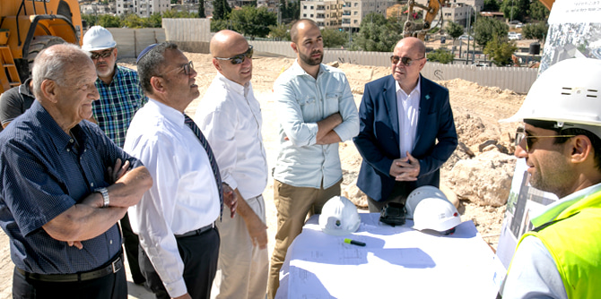
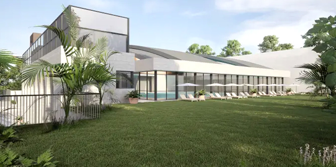

At the initiative of the Jerusalem Municipality and the Jerusalem Foundation, and with the generous support of the Jack, Joseph and Morton Mandel Foundation and other donors, work has begun to establish a community sports center in Beit Hanina, one of the northern neighborhoods of East Jerusalem. Built to the highest standards, the facility will be about 5,000 square meters (approximately 53,820 square feet) and will include an indoor swimming pool, a toddler pool, an instructional pool, gyms, fitness studios, and public areas.
The new center will be named after Jack, Joseph and Morton Mandel, in line with a decision by the Jerusalem municipality’s commemoration committee. Its construction will cost an estimated US$20 million.
“This is great news for the city of Jerusalem and especially for the residents of East Jerusalem,” said
Moshe Lion, mayor of Jerusalem, at an event marking the launch of construction. “After years in which East Jerusalem lagged behind in communal infrastructure, we are moving along at an accelerated pace with the development of public buildings and the education system in East Jerusalem, and are now investing in the areas of community, sports, and leisure as well. This is a significant breakthrough in strengthening society in Jerusalem, and this is just the beginning of reducing the gaps between different parts of the city."
Shai Doron, President of the Jerusalem Foundation, said: "The establishment of the Jack, Joseph and Morton Mandel Community Sports Center in Beit Hanina fulfills the Jerusalem Foundation’s vision for community empowerment and nurturing future leadership. We seek to reduce gaps in society and provide equal opportunities for all, in our efforts to create shared society in Jerusalem.”
 Left to right: George Samaan, chairman of the board of the Beit Hanina Community Center; Moshe Lion, mayor of Jerusalem; Shai Doron, president of the Jerusalem Foundation; Waseem Elhaj, director of the Beit Hanina Community Center; and Moshe Vigdor, director general of the Mandel Foundation–Israel (Photo: Michal Fattal / The Jerusalem Foundation)
“The Mandel Foundation is proud of its ongoing partnership with the city of Jerusalem and our commitment to the residents of the city,” said
Professor Jehuda Reinharz, President and CEO of the Jack, Joseph and Morton Mandel Foundation. “We are pleased to join the initiative of Mayor Lion and the Jerusalem Foundation in establishing the Jack, Joseph and Morton Mandel Community Sports Center in East Jerusalem. The Mandel Foundation has established its permanent headquarters in Israel in the capital city of Jerusalem, as an expression of the Foundation’s long-standing commitment to the welfare of Jerusalem and all the residents of Israel.”
Thanks to the new Jack, Joseph and Morton Mandel Community Sports Center, children and teenagers from Beit Hanina and other neighborhoods in East Jerusalem who want to learn to swim, practice swimming, or enjoy a proper swimming pool will no longer have to travel across the city to reach a public sports center with a pool.
Beyond its contribution to improving the quality of life of the residents of the area, the Center will provide employment opportunities for dozens of people – managers, fitness coaches, instructors, technicians and more – and will serve as fertile ground for the growth of local civic leadership.
The members of the Beit Hanina community administration, who will run the new sports center, were full partners in planning the new sports center. Over the next two and a half years, while the facility is being built, they will undergo training and learn about the operation and maintenance of the sports center. There is great demand for the sports center in Beit Hanina, as it is the only facility of its kind in East Jerusalem and it is expected to attract residents from many other neighborhoods in the city.
Construction of the sports center is expected to take about two and a half years.
Artist's rendering (Photo: GALPAZ Architecture & Engineering LTD)
{kind=link}
{kind=link}
{kind=link}